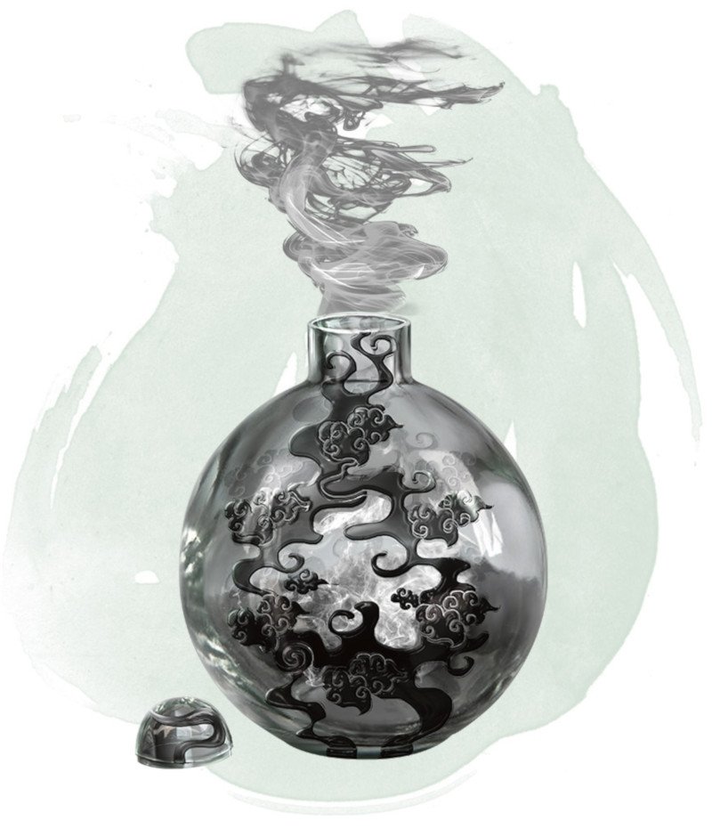

Eversmoking Bottle
Wondrous item, uncommon
Smoke leaks from the lead-stoppered mouth of this brass bottle, which weighs 1 pound. When you use an action to remove the stopper, a cloud of thick smoke pours out in a 60-foot radius from the bottle. The cloud's area is heavily obscured. Each minute the bottle remains open and within the cloud, the radius increases by 10 feet until it reaches its maximum radius of 120 feet.
The cloud persists as long as the bottle is open. Closing the bottle requires you to speak its command word as an action. Once the bottle is closed, the cloud disperses after 10 minutes. A moderate wind (11 to 20 miles per hour) can also disperse the smoke after 1 minute, and a strong wind (21 or more miles per hour can do so after 1 round.
The cloud persists as long as the bottle is open. Closing the bottle requires you to speak its command word as an action. Once the bottle is closed, the cloud disperses after 10 minutes. A moderate wind (11 to 20 miles per hour) can also disperse the smoke after 1 minute, and a strong wind (21 or more miles per hour can do so after 1 round.
Dungeon Master´s Guide (SRD)
